🔥 Top 3 (must read)
How to write an effective software design document
(HN discussion, 308 points) An excerpt from Refactoring English on what a design doc should actually contain, and how to write it so people read and respond to it. The comment thread adds real team experience on when docs help and when they are theater. Why it matters: as an EM, design docs are your main tool for spreading context and catching bad ideas before code — this is a reusable template for your team.
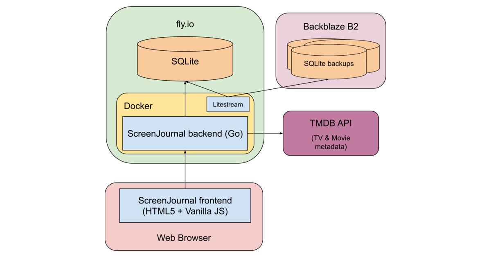
Cheap LLM code review is fine until it hits an authorization bug
A vendor eval ran a cheap model (Luna) against a frontier one (Astra) over 50 public PRs from Cal.com, Sentry, Discourse, Keycloak and Grafana: 69 verified bugs for $0.20 versus 92 bugs for $5.66 — about $0.003 vs $0.061 per bug. The cheap model holds up on normal data and logic bugs but misses the ones that need cross-file reasoning, like authorization holes. Why it matters: if you are picking an AI review tool for the team, this says use the cheap model on the whole pipeline and pay for the expensive one on auth and security-sensitive paths.
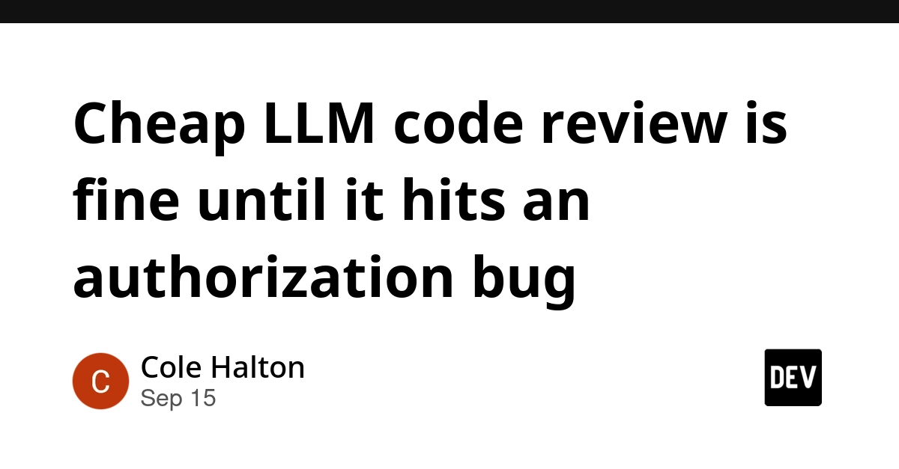
Distributed Systems Classics (2017)
(HN discussion, 247 points) A curated reading list of the papers and posts that shaped modern distributed systems thinking. Back on the front page with 56 comments adding newer picks. Why it matters: a ready-made study path for system design and scalability work, and a good thing to hand to engineers on your team who want to grow past feature work.
N
🛠 Tools & releases
Kubernetes v1.37: Memory QoS graduates to Beta
on by default now, uses cgroup v2 memory controller so the kernel handles container memory better. Post covers what changed and how to configure it.
K
Cilium 1.20
Gateway API ExternalAuth, TCPRoute/UDPRoute support, ENI IPAM for IPv6.
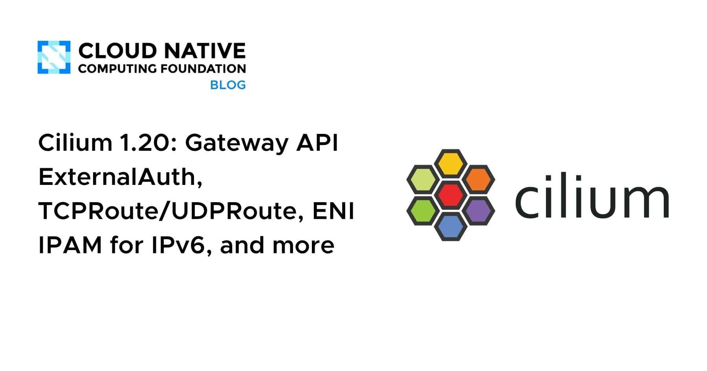
Kubernetes Changed Block Tracking API hits Beta
CSI drivers can now report which blocks changed, which makes incremental backups much cheaper. Alpha was Sept 2025; Beta came with external-snapshot-metadata v1.0.0 in March 2026.
K
Deep dive into Karpenter on EKS
argues node group sizing is a forecasting problem, not a scheduling one, and shows how to stop padding capacity "just in case".
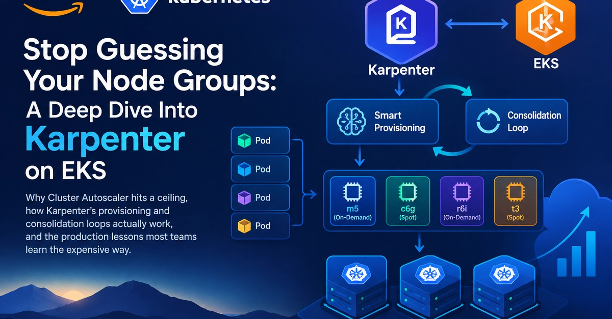
🤖 AI for developers
LLMs as a Judge: how to know if your LLM is healthy
walkthrough of LLM evaluation: using one model to score another's output, and where that breaks.
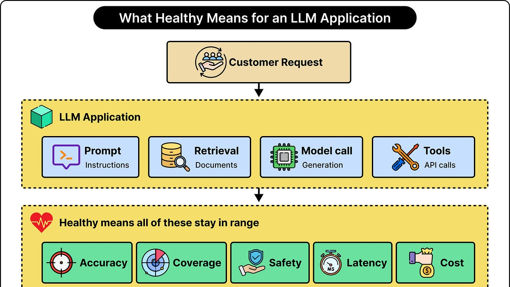
Comparing AI review tools: what the numbers actually tell you
companion read to the Top 3 item: how to read the method behind a benchmark score before you trust it.
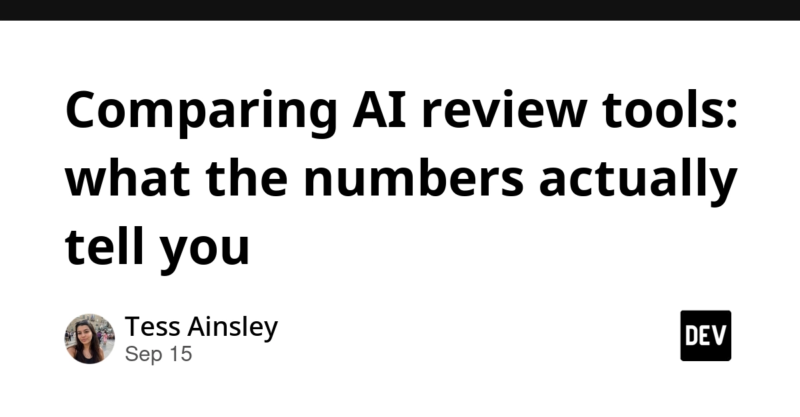
Apple's Siri can be swapped for Claude or ChatGPT, code shows
(HN) — strings found in code point to a pluggable model backend behind Siri.
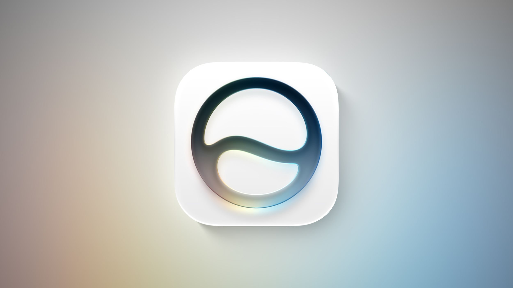
Quoting Laurie Voss: "we are all product engineers now"
the cost of writing code fell, and review/fix/operate cost is following; what is left is finding what people want and making it pleasant.
S
👔 Engineering & teams
Make each characterization test fail once before you refactor
a golden test that cannot fail is decoration, not a safety net. Record behavior, prove each case can fail, then change.
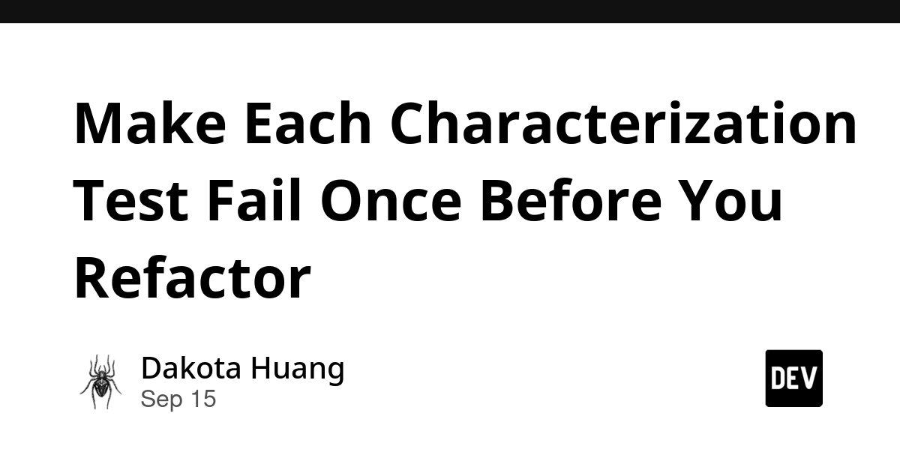
RubyGems supply chain bug, and what it teaches about npm
a caching bug served wrong package metadata; crawler traffic is what surfaced it. Maps the lesson onto Node.js dependency hygiene.
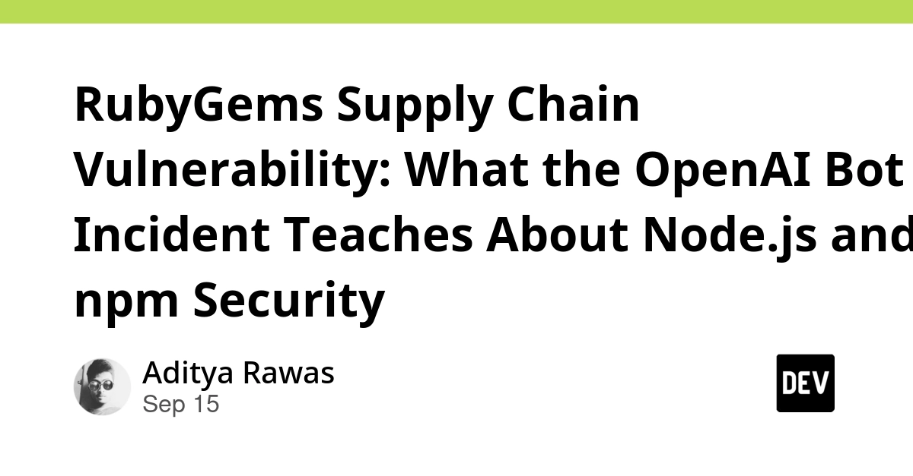
Quoting Laurie Voss
useful framing for team planning: if code output is cheap, headcount value moves to product definition and taste.
S
🎯 For me
Cheap LLM code review is fine until it hits an authorization bug
direct input for a two-tier AI review policy in your CI: cheap model on every PR, frontier model on auth, payment and entitlement paths.
Make each characterization test fail once before you refactor
applies straight to legacy Node services: mutation-check your snapshots before you trust them.
RubyGems / npm supply chain lesson
worth a look at lockfile and registry mirror settings across your Node repos.
How to write an effective software design document
EM angle: a shared doc format cuts review churn more than any tool.
💡 App ideas & indie builds
Neobrutalism.dev
(HN, 146 points) — a component set in the neobrutalist style, now with Base UI support and a new color theme. Problem: side projects all look the same because everyone uses the default shadcn theme. Inspiration: a strong opinionated visual style is a cheap way to make a small app memorable, and a component library is itself a shippable side project.
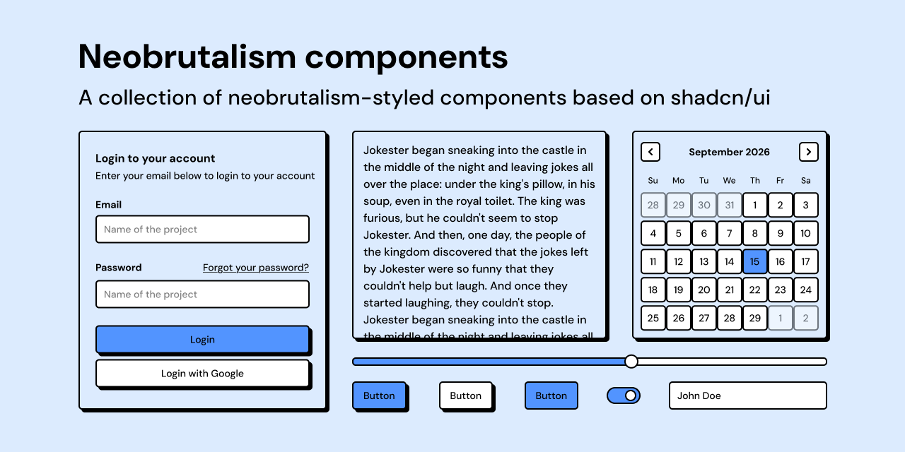
Kinesis — control your Mac with the Meta Neural Band
(HN, 109 points) — open-source bridge that turns wrist gestures into Mac input. Problem: new input hardware ships with a closed app and no desktop support. Inspiration: wrapping someone else's device with an open bridge is a fast way to get real users.
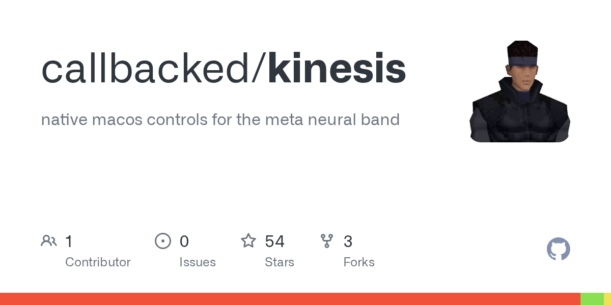
Nari Qwen3-TTS and Qwen3-ASR
(HN, 72 points) — speech models tuned for accuracy plus low latency and low cost. Problem: voice apps feel slow and cost too much per minute. Inspiration: cheap, fast speech in/out makes a whole class of voice side projects viable.
N
Pelican-bicycle alternatives
(HN, 109 points) — a small site collecting other prompts to use as a repeatable model test. Problem: judging a model quickly with one human-readable prompt. Inspiration: a tiny single-page site around one sharp idea still gets 100+ points — smallness is not a blocker.
G
🎓 Try this
Take one legacy module and run the characterization test workflow: record the golden values, then deliberately break the code once per recorded case to prove each test can actually fail. Any test that stays green is a fake safety net — fix it before you touch the real refactor.